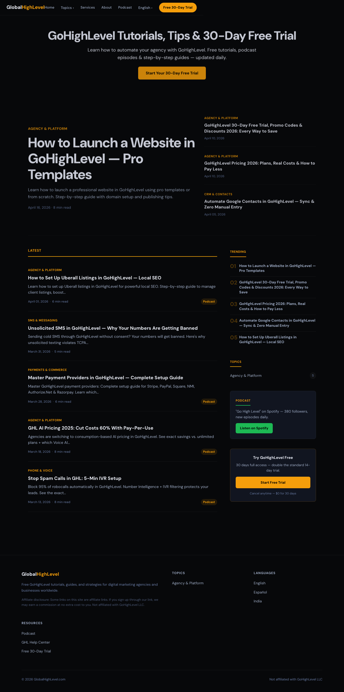
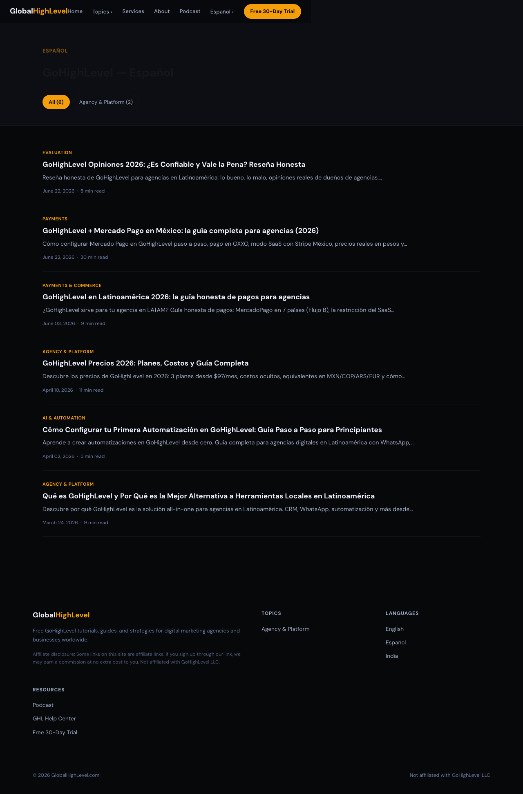
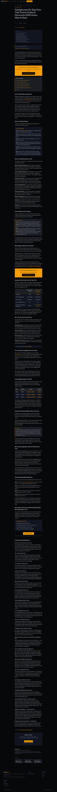

Left = the live globalhighlevel.com today (scroll inside each). Right = the new design (live, clickable). The money page stays as-is because it earns.



Left panes are screenshots of the live site (June 2026). Right panes are the new design running live and clickable. The free-trial blog is your #1 earner, so the plan protects it and points the new homepage's trial CTA at it — it doesn't get redesigned.